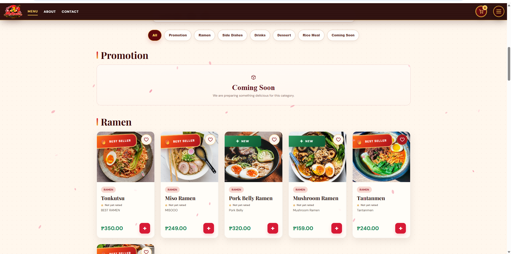
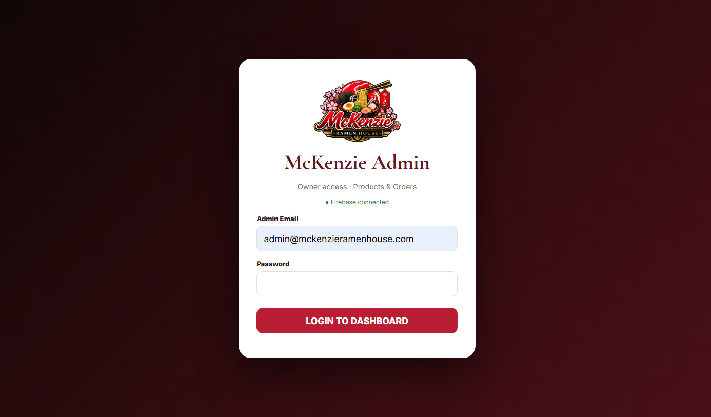

FEATURED PROJECT · CASE STUDY
McKenzie Ramen House
A real restaurant website and management system built around the customer journey and the day-to-day needs of the business.
REAL PROJECT SCREENS
Explore the system.
These are screenshots from the actual McKenzie Ramen House project. Use the live links above to experience the customer website and authorized admin portal.





SEE IT IN ACTION